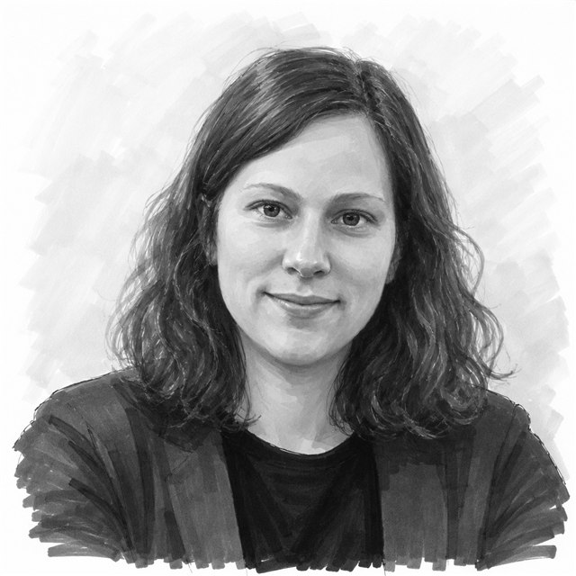

Anne-Marie George
Associate Professor, Department of Informatics, University of Oslo
I work on preference learning, computational social choice, and fairness in AI — developing methods for eliciting, aggregating, and reasoning about preferences, with an eye on how these choices shape fairness in collective decision-making. My work is primarily theoretical, drawing on combinatorial optimisation, graph theory, logic, and learning theory.
I am a Principal Investigator at Integreat, Norway's Centre for Trustworthy AI, on the Fairness & Explainability theme, and at TRUST — Centre for Trustworthy AI, in the research area AI for Flourishing.
I am currently on partial parental leave (working 40%), so replies to emails may take a little longer.
Outside of research: I like cooking, baking, board games, travelling, hiking, crafting things, and my dog <3
Research
Preferences & collective decision-making
Methods for learning, eliciting, and aggregating preferences, with applications spanning recommender systems and language model alignment.
Fairness in AI
How fairness should be conceptualised in preference-based AI systems, and what that means for collective decision-making in practice.
Methods
Primarily theoretical work drawing on combinatorial optimisation, graph theory, logic, learning theory, and online learning — as well as computational social choice, approval voting, liquid democracy, stable matching, and preference modelling more broadly.
Integreat — Fairness & Explainability
Norwegian Centre for Trustworthy AI. Read more about the Fairness & Explainability theme.
TRUST — RA014: AI for Flourishing
This research area explores how AI can help people and societies thrive. Researchers study how AI can support learning, creativity, democracy and sustainability, aiming to move beyond risk reduction toward AI that truly benefits humanity and the planet. More on TRUST's research areas.
Publications
Loading publications…
This list is refreshed automatically from DBLP. For citation counts, see Google Scholar. Last updated: —.
Teaching & Service
Teaching
- Lecturer — Reinforcement Learning and Decision Making Under Uncertainty
- IN-STK5100 / IN-STK9100, University of Oslo
- Teaching Assistant — Adaptive Methods for Data-Based Decisions
- IN-STK5000 / IN-STK9000, University of Oslo
PhD Supervision
- Meirav Segal, University of Oslo (since 2021)
- Thomas Kleine Buening, University of Oslo (since 2021)
Service
- Reviewer: AAAI, AISTATS, IJCAI
Awards
- Best Paper Award, Cooperative AI Workshop @ NeurIPS 2021
- Best Poster Award, COST IC1205 Summer School on Computational Social Choice, 2016
Contact
Department of Informatics, University of Oslo